Япония
Страна восходящего солнца — от заснеженной Фудзи и тысяч тории до неоновых улиц Токио и тихих храмовых садов Киото.
Япония — архипелаг из четырёх крупных островов и тысяч мелких, растянувшийся дугой вдоль тихоокеанского побережья Восточной Азии. Здесь древние синтоистские святилища и буддийские храмы соседствуют с одними из самых технологичных мегаполисов планеты. Откройте Японию и узнайте, как страна, веками жившая в добровольной изоляции, стала одной из культурных столиц современного мира.
Япония на карте мира
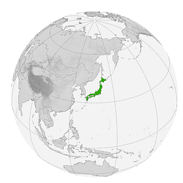
Япония — Восточная Азия, архипелаг в западной части Тихого океана
Страна без сухопутных границ: Япония — единственная страна региона, у которой нет ни одной сухопутной границы с другим государством. Всю территорию окружает море, а ближайшие соседи — Россия, Южная Корея и Китай — находятся по ту сторону пролива.
Ближайшие соседи по морю
У Японии нет сухопутных границ — только морские, отделённые проливами:
Моря вокруг архипелага
Наведи курсор на карточку, чтобы узнать больше о каждом побережье:
Тихий океан
Омывает восточное побережье страны, включая Токийский залив
Японское море
Отделяет Японию от материковой Азии на западе
Восточно-Китайское море
У юго-западных островов Окинавы, близ Тайваня
Охотское море
Северное побережье острова Хоккайдо
Общие сведения
Площадь
377 975 км² (61-я в мире)
% водной поверхности
~0,8 %
Население
~123 000 000 чел. (12-е)
Плотность
330 чел./км²
Столица
Токио
Форма правления
Парламентская конституционная монархия
Официальный язык
Японский
Император
Срок полномочий: пожизненно
Названия жителей
Японцы
Валовой Внутренний Продукт
На душу населения
~34 000 долл.
Итого
~4,2 трлн
Валюта
японская иена (JPY)
Телефонный код
+81
Часовой пояс
UTC+9
Интерактивная карта префектур
Наведи курсор на плитку — появится административный центр префектуры и любопытный факт о ней. Кнопки ниже подсвечивают целый регион страны. На карте отмечены все 47 префектур Японии.
Наведите курсор на любую плитку карты — здесь появится административный центр префектуры и интересный факт о ней.
Один день в Японии
Представьте, что сегодня вы проснулись где-то в Японии. Как может выглядеть ваш идеальный день?
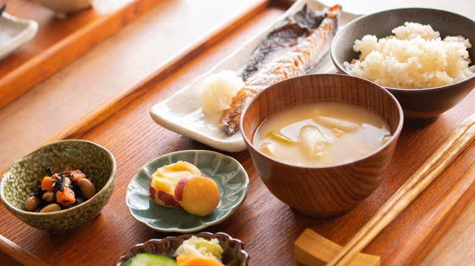
Доброе утро, Киото
Начните день с традиционного завтрака: рис, суп мисо, жареная рыба и маринованные овощи — сбалансированное начало по-японски.
📍 Киото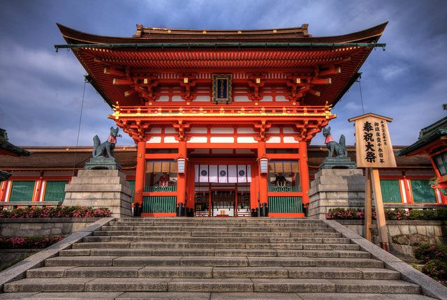
Тысячи тории
Поднимитесь по тропе святилища Фусими Инари через тысячи ярко-красных ворот тории, ведущих к вершине священной горы.
📍 Фусими Инари, Киото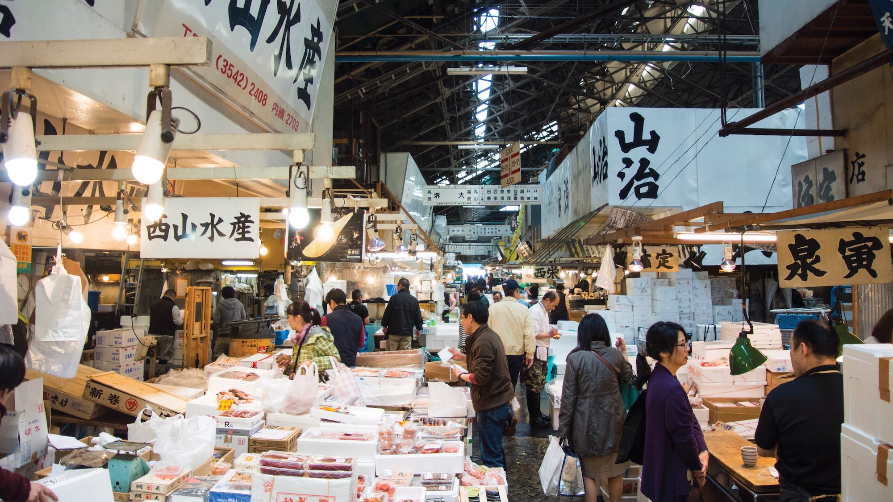
Свежие суши
Отправляйтесь на рыбный рынок Тоёсу в Токио, где рыбу для суши разделывают прямо на глазах у посетителей.
🍴 Рынок Тоёсу, Токио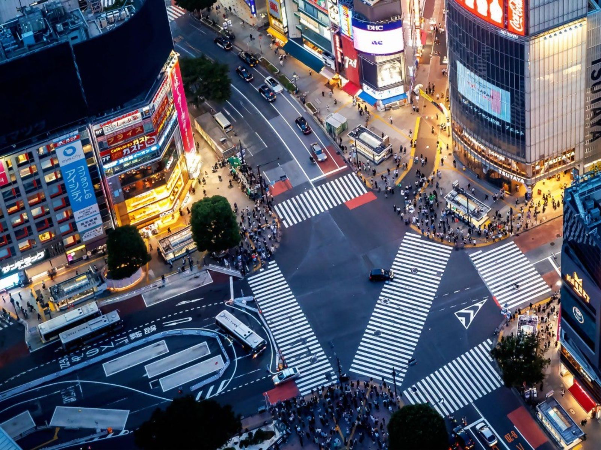
Огни Сибуи
Завершите день на знаменитом перекрёстке Сибуя, по которому одновременно переходят улицу до 3000 человек — и погрузитесь в неоновую атмосферу ночного Токио.
📍 Сибуя, ТокиоСамые красивые места
 Гора Фудзи
Гора Фудзи
Священная вулканическая гора высотой 3776 м — главный символ Японии, объект Всемирного наследия ЮНЕСКО.
 Фусими Инари
Фусими Инари
Тысячи алых ворот тории, образующих туннель на склонах священной горы в Киото.
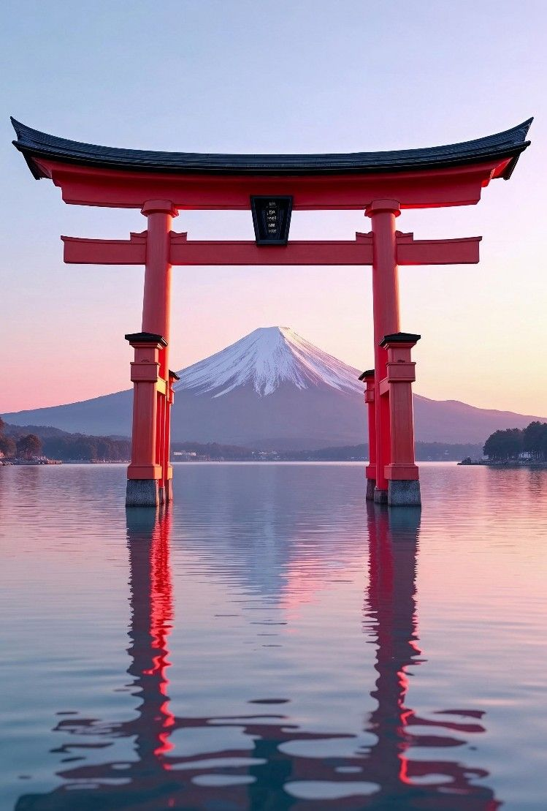
ИцукусимаПлавающие тории острова Миядзима, которые словно парят над водой во время прилива.
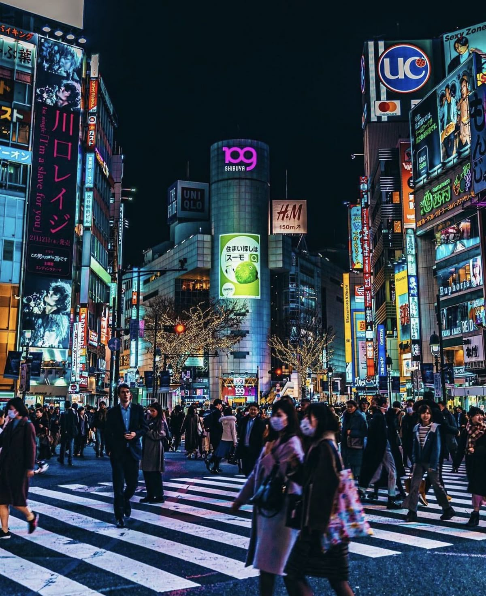
СибуяСамый оживлённый пешеходный перекрёсток мира в самом сердце Токио.
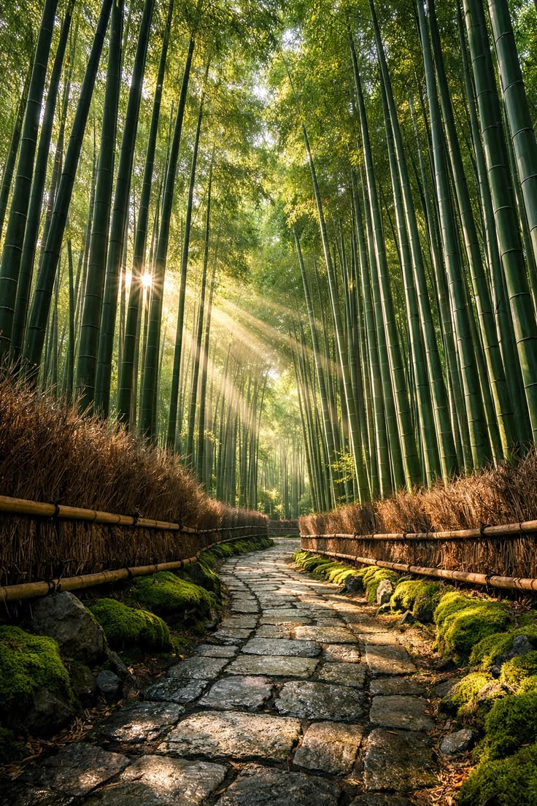
АрасиямаБамбуковая роща в Киото, где солнечный свет пробивается сквозь стволы высотой до 20 метров.
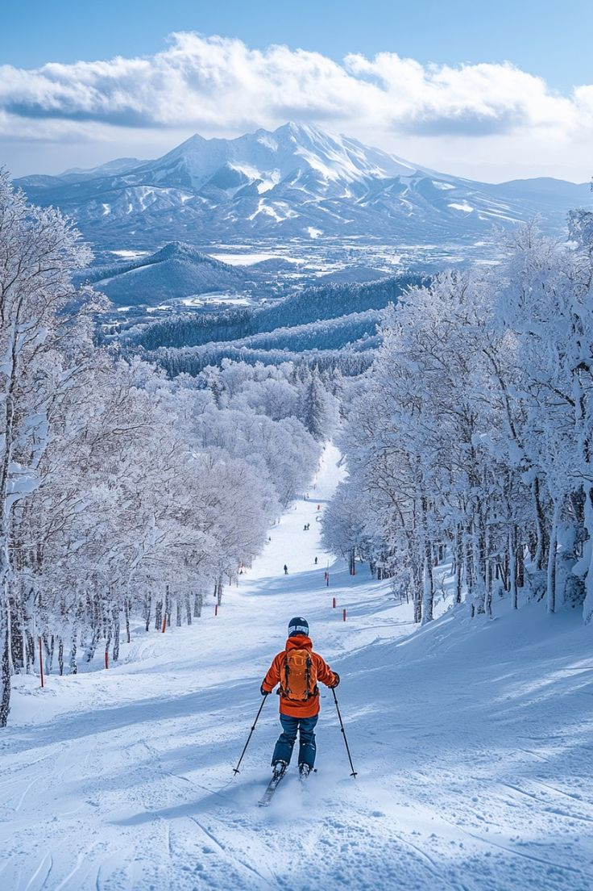
ХоккайдоСеверный остров с одними из лучших горнолыжных склонов Азии и знаменитыми снежными фестивалями.
Национальная кухня
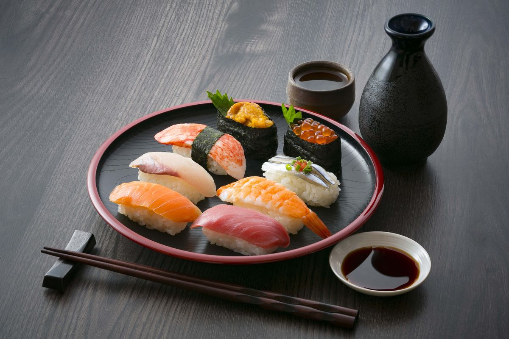
Суши
Рис с уксусом и свежая рыба — блюдо, зародившееся как способ консервации рыбы в рисе, а сегодня ставшее одним из главных символов японской кухни во всём мире.
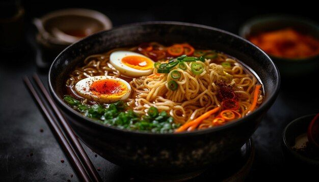
Рамен
Пшеничная лапша в наваристом бульоне — у каждого региона страны свой стиль, от соевого токийского до свиного тонкоцу из Фукуоки.
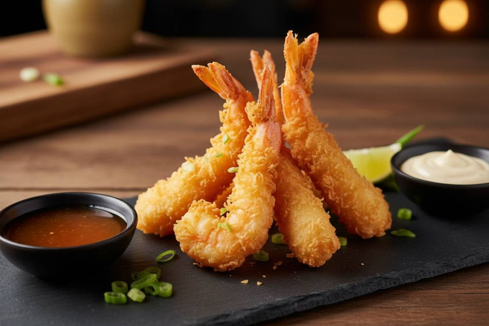
Темпура
Морепродукты и овощи в лёгком хрустящем кляре — техника жарки, которую в XVI веке в Японию привезли португальские миссионеры.
Флаг и герб Японии
Символы, за которыми стоит своя история
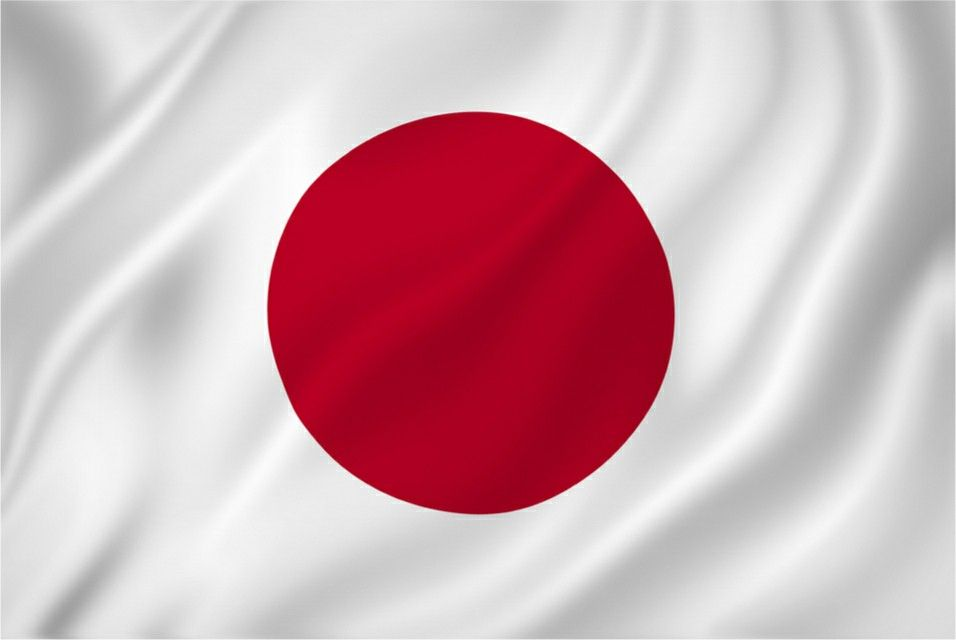
Хиномару — «солнечный круг», один из самых простых и узнаваемых флагов мира
Что означают элементы флага
Наведи курсор на каждую полосу, чтобы узнать её значение:
Белый фон
Символизирует честность и чистоту
Красный круг
Изображает солнце — само название «Япония» (Нихон) переводится как «источник солнца»
Положение круга
Расположен точно в центре полотнища — простота флага закреплена законом с 1999 года
Краткая история флага
- VII векМотив солнечного диска появляется на знамёнах и веерах японской знати.
- 1854Сёгунат Токугава официально закрепляет Хиномару как флаг японских судов.
- 1870Хиномару утверждают национальным флагом Японии указом эпохи Мэйдзи.
- 1999Закон о государственном флаге и гимне юридически закрепляет точные пропорции и оттенок флага.
Гербовые символы Японии
У Японии нет единого государственного герба в европейском смысле — вместо него страну представляют две традиционные печати.
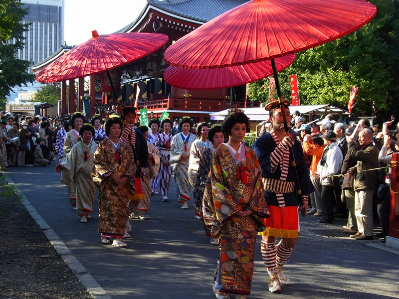
День культуры, 3 ноября — парады и выставки традиционных искусств по всей стране.
Государственные праздники
Главный праздник страны — 11 февраля, День основания государства. Отмечается в честь легендарной даты восшествия на трон первого императора Дзимму в 660 году до н. э. — по преданию, с этого события начинается японская государственность.
Новый год
Ганджицу — главный семейный праздник страны, отмечается визитом в храм
День основания государства
Кэнкоку Кинэн-но хи — главный государственный праздник страны
День рождения императора
Тэнно Тандзёби — день рождения действующего императора Нарухито
Золотая неделя
Серия праздников подряд — День Сёва, День Конституции, День зелени и День детей
День моря
Уми-но хи — благодарность океану, кормящему островную нацию
День гор
Яма-но хи — самый молодой праздник в календаре, введён в 2016 году
День культуры
Бунка-но хи — чествование искусства, науки и культурных достижений
День благодарения труду
Кинро Канся-но хи — благодарность за труд и производство